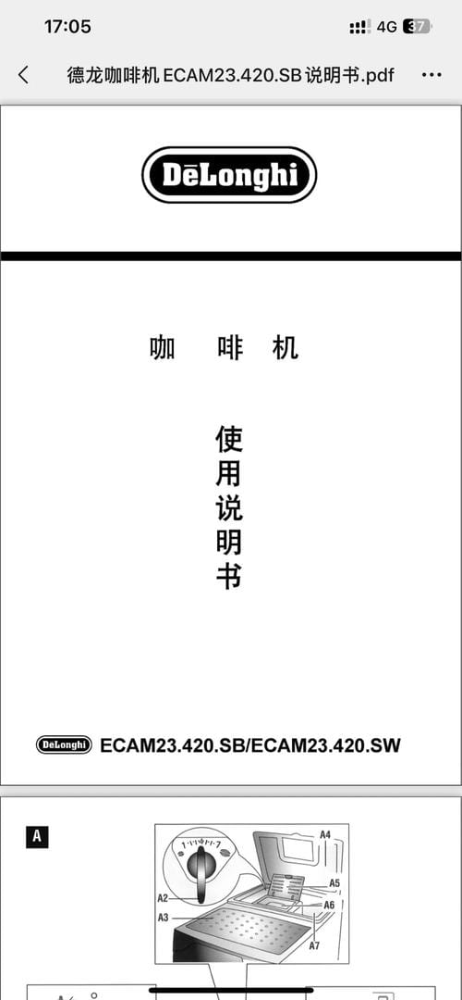

德龙 ECAM23.420 全自动咖啡机

德龙 Magnifica S 系列的中坚机型，一键从咖啡豆到意式浓缩、长杯咖啡，内置锥形钢磨提供 13 档研磨度，手动蒸汽奶泡系统可打发细腻奶泡。操作直观、拆洗方便、故障率低，是四千元档全自动咖啡机里的常青款，也是很多家庭的第一台全自动咖啡机。
客观评测
ECAM23.420 采用约 15 bar 泵压与双加热块设计，内置锥形钢磨提供 13 档研磨度。实测浓缩油脂丰厚、萃取温度稳定，日常出品的一致性在同价位机型中表现突出。约 1.8L 水箱与 250g 豆仓可满足三口之家日常需求，手动蒸汽棒能打出细腻奶泡，但需要一定练习。萃取核心可整体拆卸水冲，长期维护成本低，是一款以省心见长的家用全自动咖啡机。
主观点评
每天早上按下按键，几十秒后一杯热腾腾的浓缩端上桌，这种确定性是它最大的魅力。研磨时满屋飘香、蒸汽棒嘶嘶作响打奶泡的过程，让清晨多了点仪式感。机身不算惊艳但耐看，塑料感稍重，好在按键手感扎实、经年累月也几乎不出毛病。用了几年除了定期除垢几乎没操过心，属于那种安安静静把活干好的家电，不张扬但离不开。
优点与不足
- 一键出品稳定，浓缩油脂与温度表现优于同价位多数机型
- 萃取核心可整体拆出水冲，日常清洁省心省力
- 13 档研磨度调节，适配不同烘焙度的咖啡豆
- 手动奶泡系统需要练习，打奶泡全凭手感
- 塑料机身质感一般，机身噪音偏大
参数规格
| 类型 | 全自动意式咖啡机 |
|---|---|
| 泵压 | 约 15 bar |
| 水箱 | 约 1.8 L 可拆卸水箱 |
| 研磨 | 内置锥形钢磨，13 档研磨度可调 |
| 豆仓 | 约 250 g 密封豆仓 |
| 奶泡 | 手动卡布奇诺系统（蒸汽打发奶泡） |
| 冲泡 | 单杯/双杯可选，杯高可调支架 |
| 饮品 | 意式浓缩、长杯咖啡、美式、热水 |
| 加热 | 不锈钢加热块，开机无需漫长预热 |
| 功率 | 约 1450 W |
| 材质 | 工程塑料机身，可拆卸萃取核心 |
| 尺寸 | 约 230 × 430 × 340 mm（约） |
| 重量 | 约 9 kg（约） |